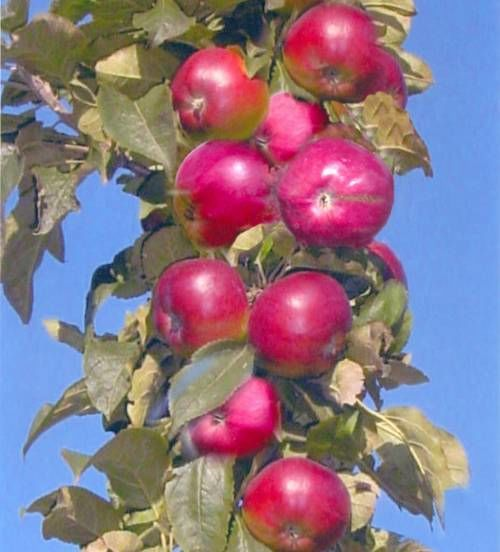

Плодово-ягодные культуры
Заявку можете оставить в "Столе заказов", либо связавшись с нами по телефону 8-913-373-83-86, 8-913-908-39-22
Принимаем заказы на сорта, которые не найдете в каталоге.
При наведении курсора на сорт, Вы можете увидеть его подробное описание.
Яблоня культурная
Богатырь
Яблоня культурная
Орловская гирлянда
Яблоня культурная
ПЕПИН ШАФРАННЫЙ
Яблоня культурная
КОНФЕТНОЕ
Яблоня полукультурная
АБОРИГЕН
Яблоня полукультурная
БАЯНА
Яблоня полукультурная
ГРУШОВКА МОСКОВСКАЯ
Яблоня полукультурная
Алтайское румяное
Яблоня полукультурная
ЖАР-ПТИЦА
Яблоня полукультурная
КИТАЙКА
Яблоня полукультурная
СМУГЛЯНОЧКА
Яблоня колоновидная
ТРИУМФ

Яблоня полукультурная
УРАЛЬСКОЕ НАЛИВНОЕ
Яблоня полукультурная
Феникс

Яблоня карликовая
БРАТЧУД
Слива
МАНЬЧЖУРСКАЯ КРАСАВИЦА
Сливово-вишненый гибрид
ОПАТА
Сливово-вишненый гибрид
ОМСКАЯ НОЧКА

Сливово-вишненый гибрид
МЕЙНОР
Сливово-вишненый гибрид
БЕТА
Вишня
УРАЛЬСКАЯ ЧЕРЕШЕНКА
Жимолость
БАКЧАРСКАЯ ЮБИЛЕЙНАЯ
Жимолость
ГОРДОСТЬ БАКЧАРА
Смородина черная
ГЕРКУЛЕС

Смородина черная
ДАШКОВСКАЯ

Смородина черная
Шаровидная
Смородина черная
Гармония
Смородина черная
Ранняя Потапенко
Смородина красная
ГОЛЛАНДСКАЯ РОЗОВАЯ
Смородина красная
АНДРЕЙЧЕНКО
Смородина красная
СТЕФАНИЯ
Смородина красная
ХРУСТЯЩАЯ
Малина
ЖАР-ПТИЦА (ремонтантный)
Малина
ЭЛИТА 30-178-1(Ремонтантный)
Малина
КАРАМЕЛЬКА (ремонтантный)
Малина
БЕНЕФИС (ШТАМБОВАЯ)
Малина
КРАСА РОССИИ (суперкрупноплодная)
Малина
ОРАНЖЕВОЕ ЧУДО (ремонтантный)
АРОНИЯ
(черноплодная рябина)